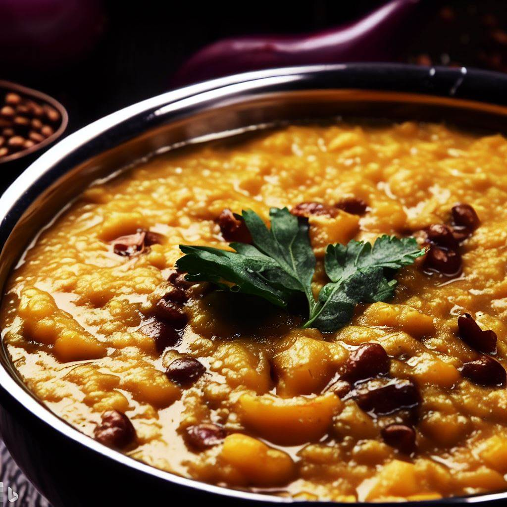

Masoor Dal

Description
A simple and flavorful lentil dish made with red lentils and spices.
Ingredients
- 1 cup red lentils
- 1 onion, finely chopped
- 2 garlic cloves, minced
- 1-inch piece of ginger, grated
- 1 tsp cumin seeds
- 1 tsp coriander powder
- 1/2 tsp turmeric powder
- 1/4 tsp cayenne pepper
- 2 tbsp vegetable oil
- 4 cups water
- Salt to taste
Steps
- Rinse the lentils thoroughly and soak them in water for 30 minutes.
- Heat oil in a large pot over medium heat. Add the cumin seeds and fry until fragrant.
- Add the chopped onion, minced garlic, and grated ginger. Cook until the onion is soft and translucent.
- Add the coriander powder, turmeric powder, and cayenne pepper. Cook for a minute.
- Add the soaked lentils and 4 cups of water. Bring to a boil, then reduce heat to low and simmer for 20-30 minutes or until the lentils are soft and cooked through.
- Using an immersion blender or a food processor, blend the dal until smooth and creamy.
- Season with salt to taste.
- Serve hot with rice or naan.